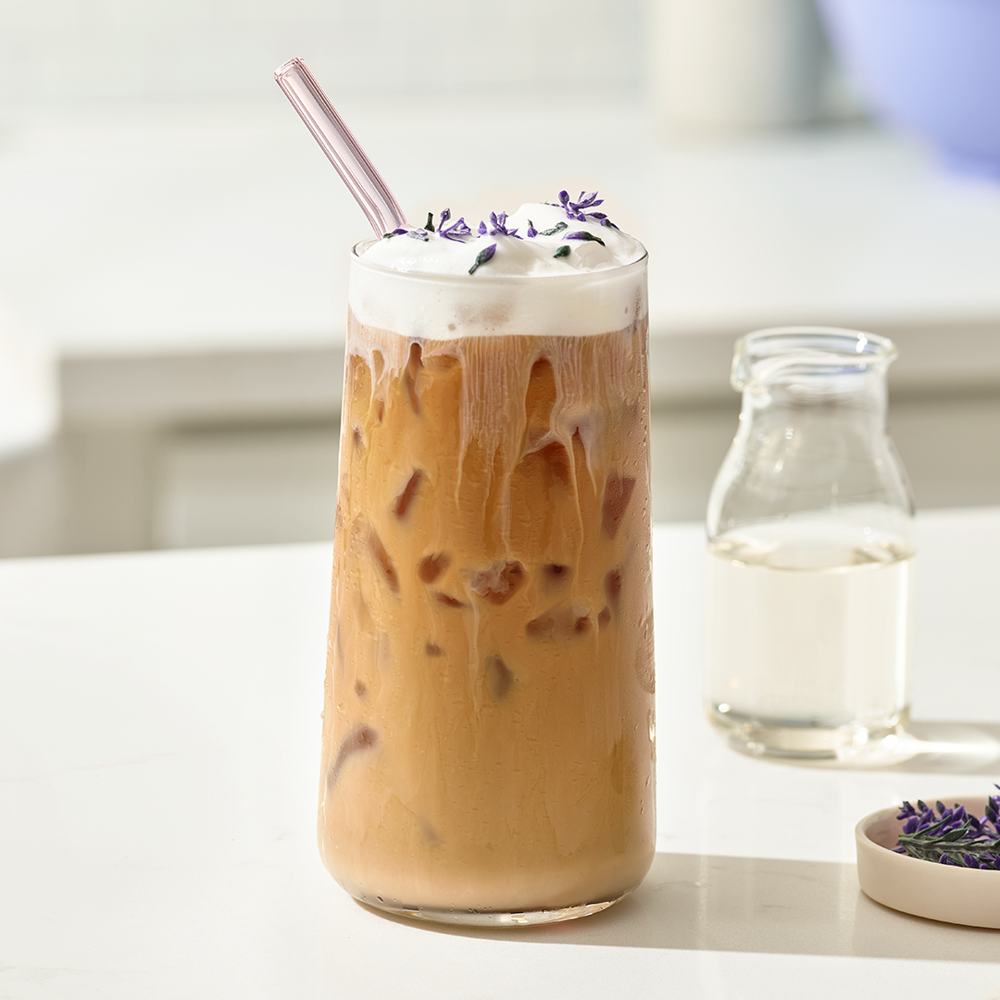

Iced Ocean Latte

Details
Ingredients
- 20ml plant based milk
- 60ml coconut water
- 1/3 tsp Butterfly Pea Powder
- Ice cubes to fill the glass
- Whipped cream
- 1 shot of Espresso
Steps
- Firstly, whip the plant-based cream and decorate the glass. Create the clouds on the sides of glass, using the whipped cream. Put ut the glass in the fridge.
- Mix the coconut water with Butterfly Pea Powder.
- Fill decorated glass with ice cubes.
- Pour the shot of espresso followed by the milk
- Pour over the blue water
- Enjoy💙